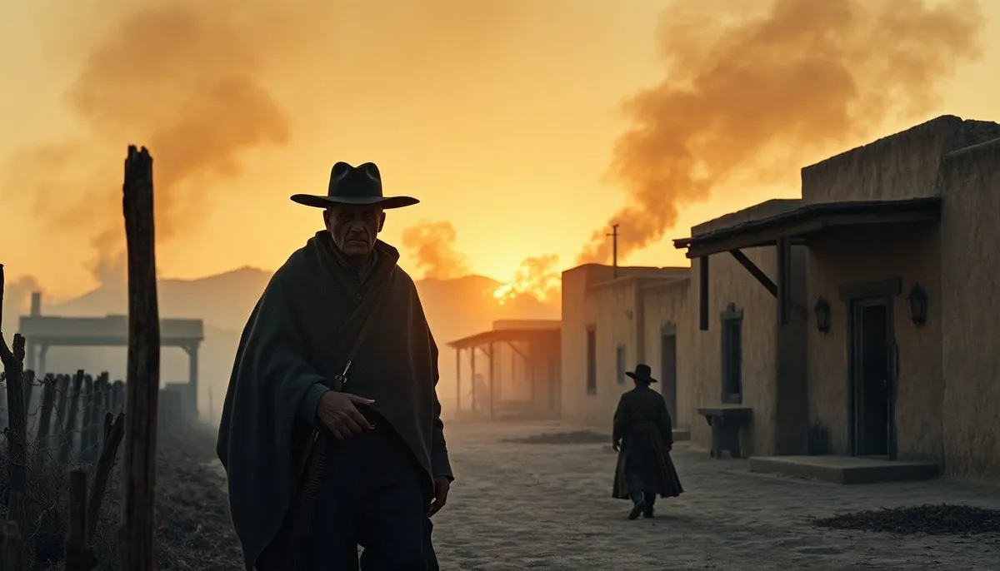

OKpolítico
OKpolítico1816: La Resistencia Huérfana

Episodio 17 de la serie Historia política de México (1816, Parte 1 de 3: enero a abril). Tras el fusilamiento de José María Morelos en Ecatepec, la Corona creyó consumada la pacificación del reino novohispano. Sin embargo, la lucha se fragmentó en una pertinaz guerra de guerrillas encabezada por fig
Compartir por WhatsApp▶ Ver este video en YouTube y suscríbete
Apertura: La sombra de Ecatepec
El primero de enero de 1816 amaneció sobre un virreinato cubierto de incertidumbre y cenizas. Apenas nueve días atrás, en la remota garita de San Cristóbal Ecatepec, cuatro disparos por la espalda habían segado la vida de José María Morelos y Pavón.
En los salones del Palacio Virreinal de la Ciudad de México, el virrey Félix María Calleja se felicitaba creyendo haber aplastado de raíz la hidra de la revolución. La captura y ejecución del 'Siervo de la Nación' dejó a la insurgencia privada de su supremo director militar y de su arquitecto institucional.
✉️ Recibe lo importante del día en tu correo. Suscríbete gratis →Sin embargo, lo que los oficiales del rey celebraban como el fin inminente de la rebelión se transformaría muy pronto en una pesadilla de desgaste que ningún ejército regular sabía cómo combatir. El Supremo Congreso Nacional, disperso tras la emboscada de Tezmalaca,
vagaba por los montes de Michoacán y Puebla sin caudillo que lo protegiera y subordinado a las tensiones de sus propios jefes militares. La causa parecía fragmentarse en mil pedazos, pero el fuego de la insurrección no se extinguió: cambió radicalmente de forma.
El poder de Calleja y el colapso parlamentario
En la Ciudad de México, el general Félix María Calleja del Rey gobernaba con un absolutismo implacable que rivalizaba con la corte de Madrid. Habiendo desconocido la Constitución de Cádiz tras el retorno de Fernando VII, el virrey concentraba el mando militar, la hacienda y la justicia sumaria bajo un estado de excepción prolongado.
Calleja aplicaba mano dura a cualquier sospechoso de infidencia y mantenía un sistema de pasaportes internos, convoyes armados y ejecuciones inmediatas que asfixiaba el comercio tradicional. Para sostener el descomunal gasto militar, continuó imponiendo préstamos forzosos a las corporaciones eclesiásticas y a los comerciantes del Consulado de México, generando un silencioso rencor incluso entre los peninsulares acomodados.
Al otro lado de las trincheras, el Congreso de Anáhuac sucumbía ante sus propias divisiones. Tras la muerte de Morelos, Manuel Mier y Terán había disuelto formalmente el Congreso en Tehuacán a finales del año anterior,
sustituyéndolo de forma precaria por comisiones ejecutivas como la Junta Subalterna Gubernativa. Privados de una cabeza rectora unificada, los comandantes insurgentes comenzaron a actuar como señores de la guerra autónomos.
Los rostros de la resistencia
En el intrincado territorio novohispano, nuevos liderazgos asumieron la defensa de la patria huérfana. Desde las barrancas impenetrables de la Sierra Madre del Sur hasta las costas del Pacífico,
Vicente Guerrero operaba como un maestro de la táctica de guerrillas, ganándose la lealtad incondicional de los pueblos indígenas, afromexicanos y mestizos de la región.
Guerrero entendió con lucidez que no podía presentar batalla frontal a las veteranas columnas españolas. Su estrategia consistió en hostigar las líneas de suministro virreinales, emboscar patrullas aisladas en desfiladeros escarpados y desvanecerse en las cumbres antes de que llegaran los refuerzos realistas.
Hacia el oriente, en la provincia de Veracruz, Guadalupe Victoria dominaba el corredor estratégico que unía el puerto jarocho con el altiplano central. Escondido en las selvas de Huatusco y los pasos de Naolinco,
Victoria cobraba peajes a las mercancías virreinales y burlaba una y otra vez a las tropas de la Corona, convirtiéndose en una auténtica leyenda viviente entre la población local.
En el Bajío y los Altos de Guanajuato, Pedro Moreno fortificaba el Fuerte del Sombrero, en la sierra de Comanja, estableciendo un baluarte casi inexpugnable desde donde desafiaba las ricas haciendas y los convoyes de plata del Camino Real de Tierra Adentro.
Campañas de invierno: El Bajío y las intrigas militares
Durante el invierno de 1816, el virreinato fue escenario de violentos choques regionales. En el corazón agrícola del Bajío, el coronel realista Agustín de Iturbide, al mando del regimiento de Celaya,
mantenía una ofensiva implacable contra las partidas insurrectas que asolaban las intendencias de Guanajuato y Valladolid. El 18 de febrero de 1816, las tropas de Iturbide libraron un encarnizado combate en las inmediaciones del Valle de Santiago,
derrotando a una importante concentración rebelde y recuperando pertrechos y víveres para el bando realista. La victoria reafirmaba su fama de militar implacable y eficaz en el campo de batalla.
Sin embargo, el triunfo duró poco en el ánimo del oficial criollo. Comerciantes y terratenientes de Querétaro y Guanajuato elevaron graves denuncias ante el virrey Calleja, acusando a Iturbide de enriquecimiento ilícito, monopolio comercial, cobro de escoltas privadas y confiscaciones arbitrarias de plata.
En abril de 1816, Agustín de Iturbide fue destituido de su mando en el Ejército del Norte y llamado a la Ciudad de México para someterse a una exhaustiva investigación militar.
La tierra herida: El año sin verano y la crisis social
A los estragos de seis años continuos de guerra fratricida se sumó una anomalía natural de proporciones planetarias. La gigantesca erupción del volcán Tambora en las Indias Orientales, ocurrida en 1815,
había lanzado a la atmósfera colosales nubes de ceniza y aerosoles de sulfato, provocando un enfriamiento generalizado del clima global. En la Nueva España, los primeros meses de 1816 presenciaron heladas atípicas fuera de temporada,
alteraciones severas en los ciclos de lluvias y una profunda sequedad que arruinó los sembradíos de maíz y frijol en el Altiplano Central y la meseta purépecha. El precio de los granos básicos se disparó rápidamente en los mercados urbanos.
Para las comunidades indígenas y las castas desposeídas, la carestía de alimentos transformó la supervivencia diaria en un calvario. Mientras las autoridades de la Real Hacienda forzaban la recaudación de tributos para solventar los sueldos de las tropas realistas,
la desesperación empujó a centenares de labradores a unirse a las partidas guerrilleras locales en busca de sustento. En medio de este clima de zozobra social, la imprenta clandestina y las letras urbanas ofrecían un desahogo satírico.
Fue en este convulso 1816 cuando el periodista José Joaquín Fernández de Lizardi comenzó a imprimir por entregas 'El Periquillo Sarniento', considerada la primera novela moderna de Hispanoamérica, que retrató de forma descarnada la moral, la miseria y la corrupción de la sociedad colonial tardía.
La diplomacia del aislamiento y la condena papal
A nivel internacional, la causa insurgente se encontraba en el más dramático de los aislamientos. Las misiones enviadas por Morelos y el Congreso para obtener el reconocimiento oficial y pertrechos de guerra en Washington habían chocado contra el pragmatismo estricto de la administración de James Madison,
enfocada en consolidar sus fronteras y mantener la neutralidad. El golpe diplomático y moral más devastador llegó desde Roma.
El 30 de enero de 1816, el papa Pío VII promulgó el breve apostólico 'Etsi longissimo terrarum'. En esta encíclica, redactada a petición explícita de Fernando VII,
el sumo pontífice exhortaba a los prelados y fieles de la América española a someterse con lealtad al monarca legítimo y condenaba categóricamente los levantamientos armados. En los púlpitos de Puebla, Guadalajara y Valladolid, la jerarquía eclesiástica novohispana blandió el documento pontificio como anatema teológico.
Para una población profundamente devota que había seguido a curas como Hidalgo y Morelos, la orden papal de sumisión sembró dudas morales y mermó el apoyo de los sectores criollos más conservadores.
El mundo en 1816: La Restauración y el fuego en Ultramar
Mientras Nueva España resistía, el concierto internacional consolidaba el retorno del Antiguo Régimen. En Europa, la Santa Alianza afianzaba las monarquías absolutas tras la derrota definitiva de Napoleón Bonaparte, y en Rusia,
el zar Alejandro I expulsaba a los jesuitas de San Petersburgo y Moscú en aras de un férreo control religioso. En el extremo norte del continente americano,
el Congreso de los Estados Unidos aprobaba entre marzo y abril de 1816 la creación del Segundo Banco de los Estados Unidos para estabilizar su economía de posguerra, mientras el secretario de Estado James Monroe era ungido como candidato indiscutible a la presidencia.
En Sudamérica, el péndulo de la guerra civil oscilaba con violencia. En el Virreinato de la Nueva Granada, el mariscal de campo Pablo Morillo dirigía la sangrienta pacificación realista; sin embargo, en el Alto Perú, el 3 de marzo de 1816,
la caudilla Juana Azurduy de Padilla encabezaba una carga audaz con 200 combatientes contra las fuerzas españolas, ganándose el ascenso a teniente coronel. Al mismo tiempo, en Londres, un joven militar navarro y antiguo héroe de la guerra contra Napoleón ultimaba un plan extraordinario. Francisco Xavier Mina,
exiliado tras rebelarse contra el absolutismo de Fernando VII y convencido por fray Servando Teresa de Mier, preparaba una expedición naval para viajar a América y combatir la tiranía en suelo mexicano.
Mito vs. historia: ¿Pacificación total o impasse sangriento?
La historia oficial realista de la época pretendió vender a la corte de Madrid la idea de que, ejecutado Morelos, la Nueva España estaba virtualmente pacificada y que solo subsistían forajidos de caminos sin causa política ni arraigo popular.
Sin embargo, los partes militares de las intendencias demuestran lo contrario: la guerra simplemente se había atomizado. Los comandantes realistas no tenían hombres suficientes para guarnecer cada hacienda,
pueblo y cruce de caminos; en cuanto los regimientos virreinales abandonaban una plaza para acudir a otra, las fuerzas insurgentes volvían a ocuparla de inmediato.
Tampoco es exacto el relato que describe a todos los líderes insurgentes de 1816 como defensores armónicos de la república. La falta de un caudillo unificador provocó rencillas y desconfianzas mutuas entre hombres como Ramón Rayón, José Antonio Torres y Manuel Mier y Terán, disputándose el mando y los escasos recursos armamentísticos.
El relevo en el horizonte
Al finalizar el primer cuatrimestre de 1816, el virreinato se encontraba en un punto muerto. El virrey Félix María Calleja, agotado físicamente y acumulando quejas tanto de los insurgentes perseguidos como de las élites novohispanas esquilmadas por sus tributos,
sabía que sus días al frente del gobierno virreinal estaban contados. En la corte de Madrid, Fernando VII ya preparaba su relevo,
decidiéndose por un marino de carrera con fama de templanza y habilidad negociadora: Juan José Ruiz de Apodaca y Eliza, por entonces capitán general en la isla de Cuba, a quien se le encomendaría ensayar una política de reconciliación mediante indultos masivos.
La promesa planteada a comienzos de año quedaba así saldada ante la historia: la muerte de José María Morelos no liquidó el anhelo libertario de la Nueva España. Por el contrario, forzó al movimiento a refugiarse en sus raíces más profundas, descentralizando la resistencia en una red de montañas,
selvas y pueblos que ningún decreto imperial ni espada virreinal podía sofocar.
Sigue viendo
Con información de
Wikipedia — 1816 (es) · Wikipedia — 1816 (en) · Wikipedia — Anexo:México en 1816 · Wikipedia — Etapa de Resistencia de la Independencia de México · Wikipedia — Juan José Ruiz de Apodaca y Eliza · Del Arenal Fenochio, Jaime. Cronología de la Independencia (1808-1821), INEHRM, 2011